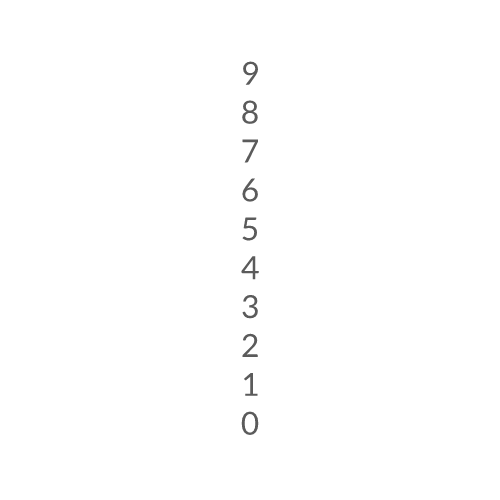
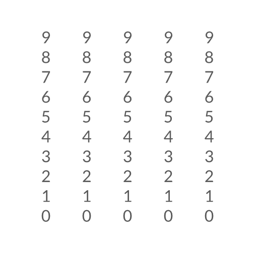

索引上下文
简介
Context Index 工具充当一种仅在图层计算期间存在的输入。与其他图层存在输入连接的图层，可以选择向这些输入图层提供上下文，以产生不同的结果。复制器就是这样一个图层，它会为其所有输入提供索引上下文。
信息：
关于这一概念的背景知识，请查看上下文页面。
该工具让我们能够利用上下文信息，实现更具体、更精细的结果。
要直观地查看“索引上下文”，请按以下步骤操作：
- 创建一个文本图形。
- 使用 String 属性旁的
+按钮，添加一个字符串生成器。 - 将 Generator 设为 Value。
- 将 Precision 和 Padding 设为 0。
- 将文本图形添加到一个复制器中。
- 在 Grid Distribution 上，将 Count 设为 X = 1、Y = 10。
- 创建一个 Context Index 工具。
- 连接
contextIndex.id→stringGenerator.number
信息：
复制器在其 Advanced 标签页下包含一个 Index Context 属性。可以跳过创建 Context Index 工具，直接从复制器进行连接。例如，将上面的步骤 7 和 8 替换为：
- 连接
duplicator.indexContext→stringGenerator.number

这里没有什么太出乎意料的地方。那我们再深入一些。
上下文深度
当图层提供上下文时，它会被加入一条上下文链。如果一个复制器嵌套在另一个复制器内，这条链中就包含两个索引上下文。Context Index 让你可以选择提供给其他图层的这些上下文的“深度”。
示例（接续上一个示例）：
- 将该复制器添加到第二个复制器中。
- 将 Duplicator2 的 Grid Distribution 设为 Count X = 5, Count Y = 1。
结果：索引值会传递到第二个复制器。

Duplicator1 会自动累积来自 Duplicator2 的索引，这就是为什么即使我们将 Depth 值设为 1，得到的数字仍从 0 到 49。我们可以改变这一点：3. 在属性编辑器中，取消勾选 Duplicator1 的 Advanced 标签页下的 Use Index Context。
结果：数字现在表示来自 Duplicator1 的索引。

- 将 Content Index 上的 Depth 设为 2。
结果：数字现在表示来自 Duplicator2 的索引。

补充
将 Context Index 工具与 JS 数学 工具结合使用，可以产生一些有趣的结果。
- 创建另一个 Context Index 工具。
- 确保 Depth 设为 1（默认值）。
- 创建一个 JS 数学 工具。
- 连接
contextIndex2.id→jsmath.array.0 - 将 Expression 设为：
0.5 + n0 * n0 * 0.01。 - 连接
jsmath.id→duplicator1.shapeScale.x - 连接
jsmath.id→duplicator1.shapeScale.y